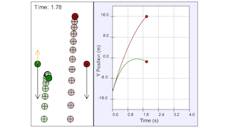

This model simulates two identical projectiles being launched vertically. The only difference is that the green one is subject to air resistance. Students are able to observe how this force affects the green projectile's position, velocity, and acceleration in comparison to the red projectile which is only acted on by gravity.